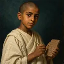
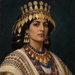

Mesopotâmia · c. 2600 a.C.
Jogo Real de Ur
As vinte casas
Corrida com dados piramidais por 20 casas: as rosetas dão outro lançamento e na fila central se captura.


Seus rivaisLudingira, o aprendiz de escriba · Ea-nasir, o mercador · Puabi, a rainha de Ur
2 variantes